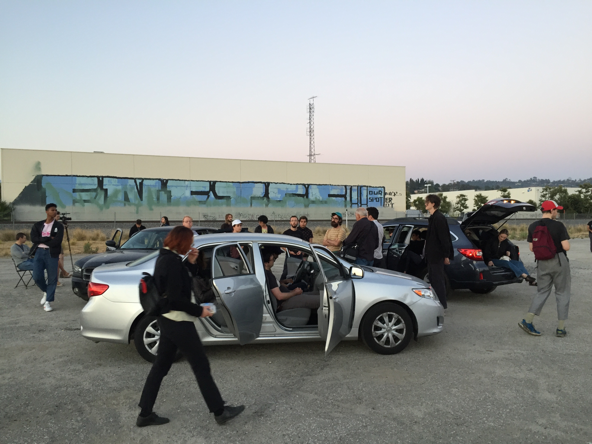

AIR OUT
Presented in partnership with Clockshop at the Bowtie Project as a part of Dogstar Festival 13.
6.4.17
Performers: Casey Anderson, Celia Hollander, John Eagle
Featuring three performers in three parked cars, using car stereos and a mobile audience, the piece adapts an iconic symbol of isolation as a form to explore openness, harmony, and synchronicity. Whereas the isolation of a car usually negates the experience of interacting with the larger human ecosystem, in Air Out, performers and audience share space and time.
 


The physical landscape, economy and culture of Los Angeles has been shaped and defined by cars. Walking down the street in a crowd, it is easy to relate to other people and understand oneself within a larger ecosystem of humanity. In a car, the idea of individualized isolation is reinforced by the experience of being in a safe, comfortable, temperature controlled bubble, complete with a custom soundtrack and a smooth, cinematic windshield view. Moreover, any form of contact with a car is a horrible event; at best it is unlucky and costly, and at worst it is lifetaking and irreversible.
The experience of relating as an individual in a car can be compared to virtual communications; both prioritize visual information but negate the senses of touch and sound. A driver can see other drivers but can’t hear them vulnerably singing at the top of their lungs, or on instagram one can see images of another’s travel, empty of the messy realities of the physical world. Both experiences are mediated by a glassy screen: the framed glassy views through a windshield and the small, rectangle window screens of iphones or computers.
For many, the election was a moment where a metaphorical hammer smashed through these glassy, framed views. This piece is an attempt not to destroy these established systems we have in place, but to open them up, air them out, allow multiple perspectives, and experiment with composing a synchronicity, connection and harmony, using instruments that were most literally designed to be separate entities.
The Bowtie Project is a site that achieves a spatial and temporal duality through being a geographically and historically liminal space. In my experiences attending performances and exploring the Bowtie I have simultaneously felt like I was outside of LA while understanding that I was right in the center. It is a space that both gives a glimpse of what LA may have been before the built environment while suggesting LA’s possible futures. I intend for this performance to similarly place an audience both inside and outside of their experiences of LA, allow a duration of presence to reflect on the past while envisioning a future, and ultimately pull a group of people together to share space and time outside of their bubbles.

Air Out - SCORE
I. Each radio is set to a different station, volume is loud enough to hear outside of car, bass boosted, wear earplugs if necessary.
Drivers are in front seat with windows and doors closed.
II. Ill first roll down my windows, one by one. Each car will follow.
Scrub through radio stations, loud enough to broadcast. Make sure to leave on “Scan” when leaving car.
III. I will get out of the car and go to the next, open up the back and passenger doors, then the driver’s door and let the driver out, taking their place. That driver will then go to the next car, and so on.
Once sitting in the new car, scrub until finding a static station.
IV. After a few moments of unified static, choose from tracks on the playlist. Choose how you want to play them: shuffle, skipping around, all the way through, customize with eq or volume.
Choose whether you want to open or close doors or windows. Feel free to get out of the car and check on the overall sound/mix. Audience members are allowed and welcome to sit in the cars.
V.I will leave the car and get into the backseat of the third car, making sure to open any doors if any were closed. After a moment, that driver will then go into the backseat of the next car, and so on, until we have all rotated cars again and are sitting in the backseats of the last cars.
Leave the audio on in the car.
VI. I will then move to the front seat of the car and the other drivers will follow, one by one.
Once sitting in the front seat, put on air out sines.
VII. Turn on lights, turn off music. Sit in silence for a few moments before getting out.